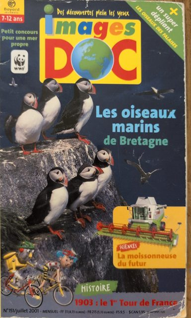
Les oiseaux marins de Bretagne
Images Doc · N° 151 · juillet 2001
Les macareux et leurs falaises, la moissonneuse du futur et le premier Tour de France (1903).
Je l'empruntePrêt de livres et magazines
Livres, magazines et BD pour nourrir ta curiosité.
Emprunte-les, lis-les, rapporte-les !
Le prêt est réservé aux membres du Lab.
Tu rends celui que tu as pour en emprunter un autre.
C'est la durée d'un prêt. Prends ton temps, mais pas trop !
Viens l'emprunter au Lab, ou réserve-le en nous écrivant.
Pas encore membre ? Rejoins l'expérience (15 € l'année, ateliers compris).

Images Doc · N° 151 · juillet 2001
Les macareux et leurs falaises, la moissonneuse du futur et le premier Tour de France (1903).
Je l'emprunte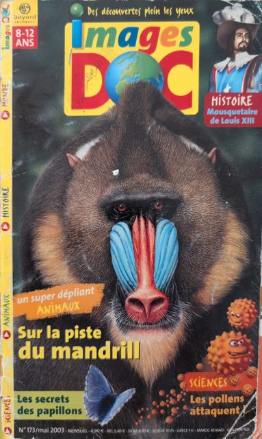
Images Doc · N° 173 · mai 2003
Le mandrill, les secrets des papillons, les pollens, et un mousquetaire de Louis XIII.
Je l'emprunte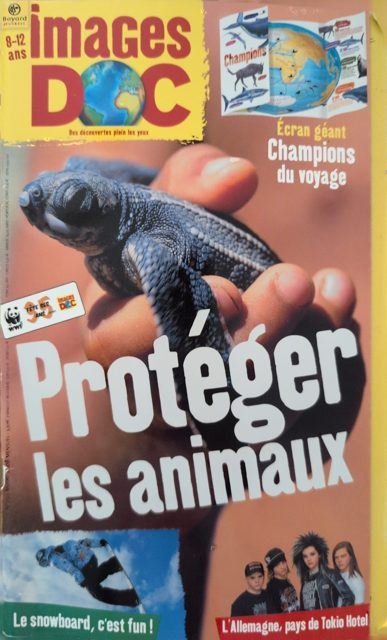
Images Doc
Protéger les animaux, les champions du voyage, le snowboard et le groupe Tokio Hotel.
Je l'emprunte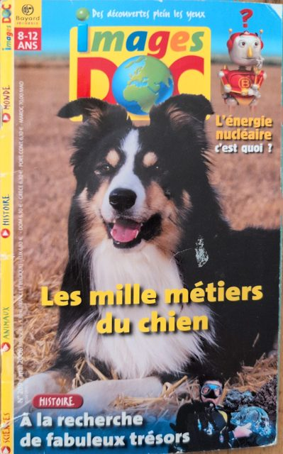
Images Doc
Tous les métiers du chien, l'énergie nucléaire expliquée, et à la recherche de fabuleux trésors.
Je l'emprunte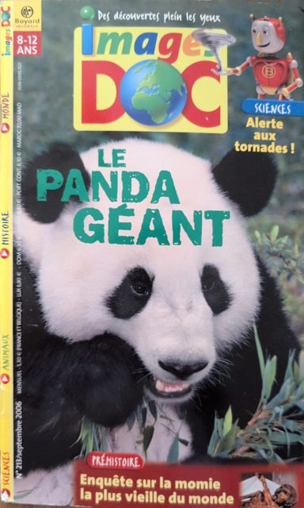
Images Doc · N° 213 · septembre 2006
Le panda géant, alerte aux tornades et enquête sur la momie la plus vieille du monde.
Je l'emprunte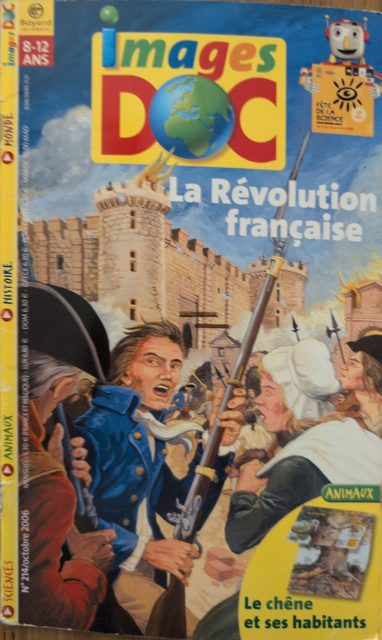
Images Doc · N° 214 · octobre 2006
La Révolution française, le chêne et ses habitants, et la Fête de la Science.
Je l'emprunte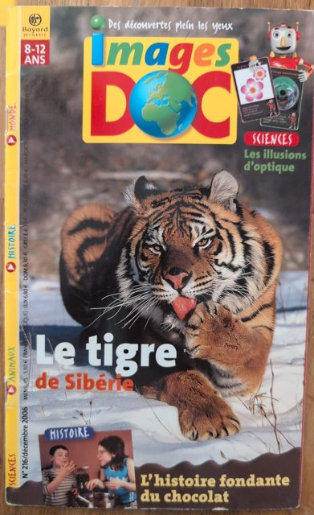
Images Doc · N° 216 · décembre 2006
Le tigre de Sibérie, les illusions d'optique et l'histoire fondante du chocolat.
Je l'emprunte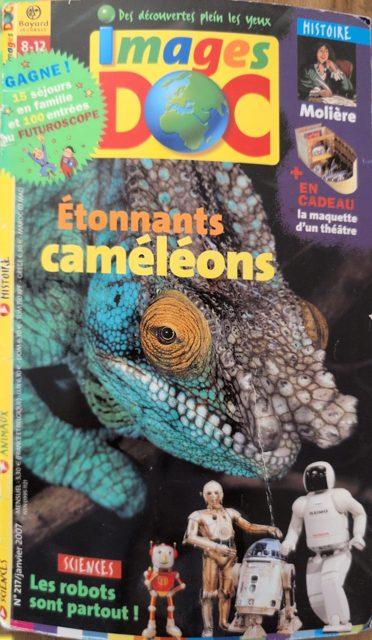
Images Doc · N° 217 · janvier 2007
Les caméléons, les robots sont partout ! et Molière avec la maquette d'un théâtre en cadeau.
Je l'emprunte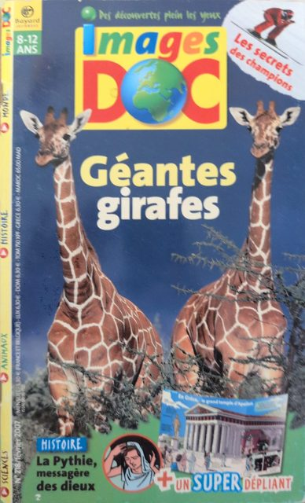
Images Doc · N° 218 · février 2007
Les girafes, la Pythie messagère des dieux, et les secrets des champions.
Je l'emprunte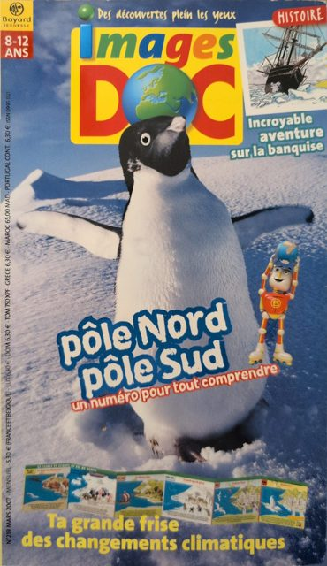
Images Doc · N° 219 · mars 2007
Un numéro pour tout comprendre aux pôles, avec une grande frise des changements climatiques.
Je l'emprunte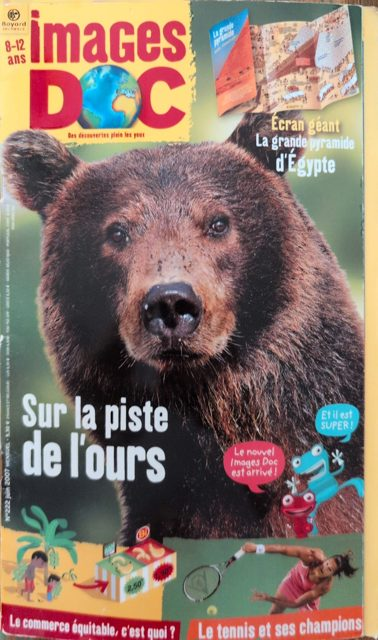
Images Doc · N° 222 · juin 2007
L'ours brun, la grande pyramide d'Égypte, le commerce équitable et le tennis.
Je l'emprunte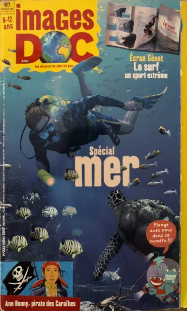
Images Doc · N° 223 · juillet 2007
Plongée dans la mer, le surf (un sport extrême) et Ann Bonny, pirate des Caraïbes.
Je l'emprunte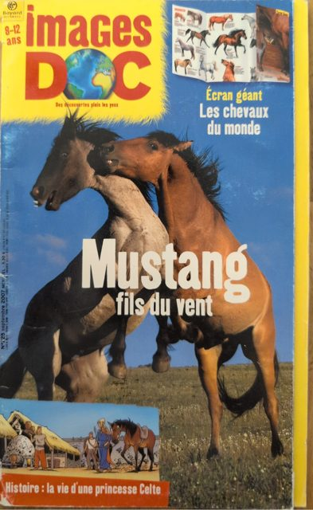
Images Doc · N° 225 · septembre 2007
Les chevaux du monde en écran géant, et la vie d'une princesse celte.
Je l'emprunte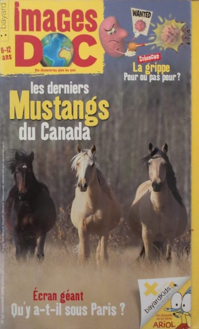
Images Doc
Les chevaux sauvages du Canada, la grippe (peur ou pas peur ?) et ce qu'il y a sous Paris.
Je l'emprunte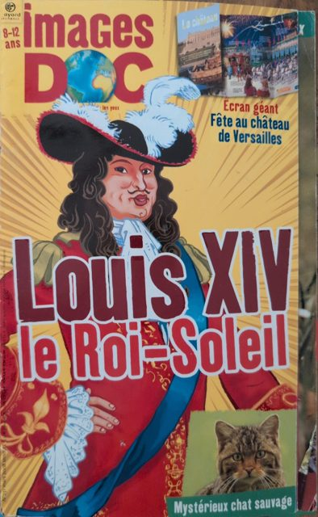
Images Doc
Le Roi-Soleil, une fête au château de Versailles et le mystérieux chat sauvage.
Je l'emprunte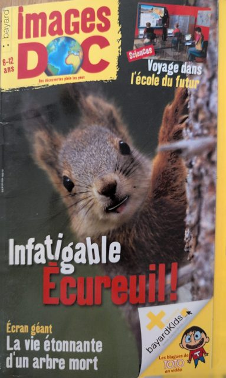
Images Doc
L'écureuil, la vie étonnante d'un arbre mort et un voyage dans l'école du futur.
Je l'emprunte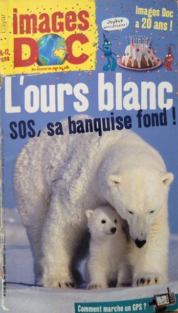
Images Doc · N° 241 · janvier 2009
L'ours polaire face au réchauffement, et comment marche un GPS ?
Je l'emprunte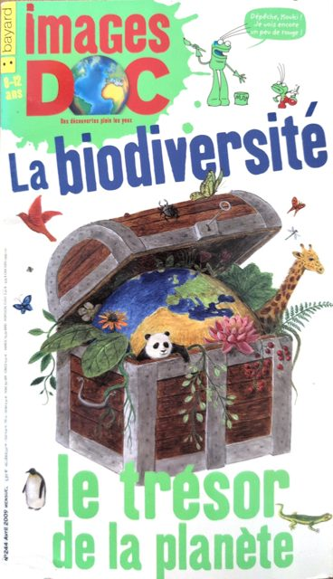
Images Doc · N° 244 · avril 2009
Pourquoi la biodiversité est un trésor à protéger.
Je l'emprunte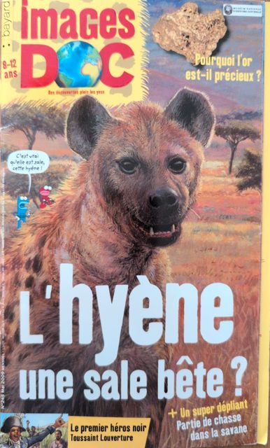
Images Doc · N° 245 · mai 2009
L'hyène, pourquoi l'or est-il précieux ?, et Toussaint Louverture, le premier héros noir.
Je l'emprunte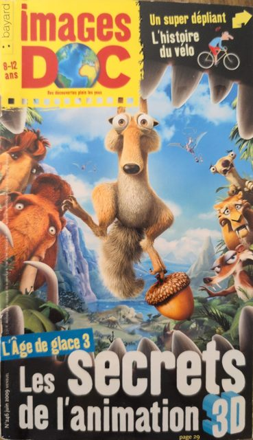
Images Doc · N° 246 · juin 2009
Dans les coulisses de L'Âge de glace 3, et l'histoire du vélo en super dépliant.
Je l'emprunte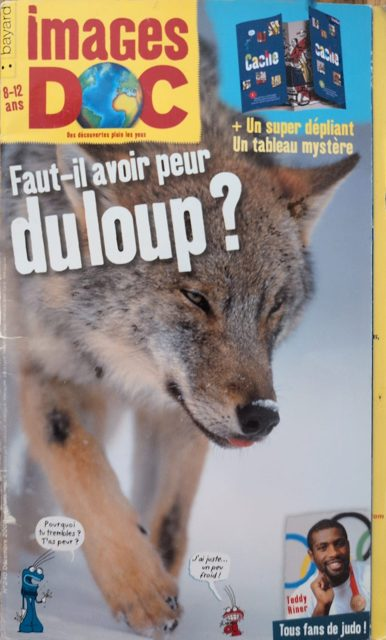
Images Doc
Le loup, un tableau mystère en dépliant, et tous fans de judo avec Teddy Riner.
Je l'emprunte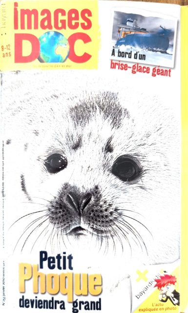
Images Doc · N° 251 · janvier 2010
Le bébé phoque, à bord d'un brise-glace géant, et l'actu expliquée en photo.
Je l'emprunte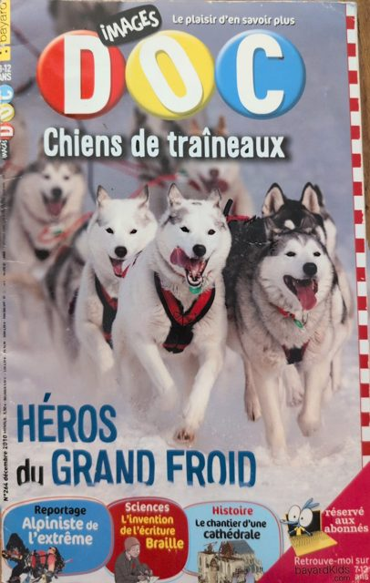
Images Doc · N° 264 · décembre 2010
Les chiens de traîneaux, l'invention du braille et le chantier d'une cathédrale.
Je l'emprunte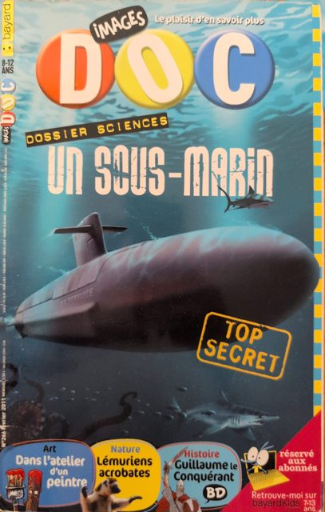
Images Doc · N° 266 · février 2011
Dossier sciences : un sous-marin, les lémuriens acrobates et Guillaume le Conquérant.
Je l'emprunte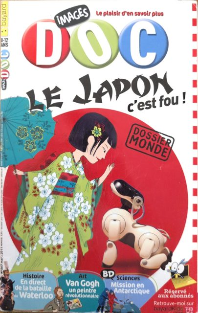
Images Doc · N° 267 · mars 2011
Dossier Japon, la bataille de Waterloo, Van Gogh et une mission en Antarctique.
Je l'emprunte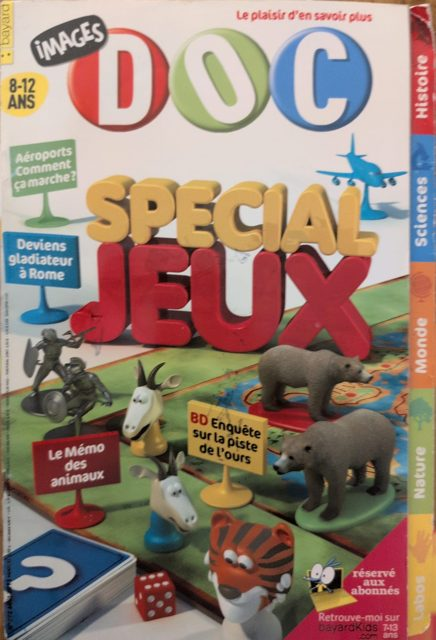
Images Doc
Un numéro spécial jeux : aéroports, gladiateurs à Rome, le mémo des animaux et une BD enquête.
Je l'emprunte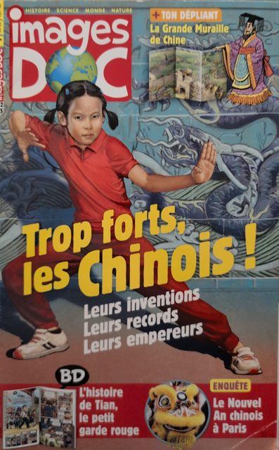
Images Doc
Inventions, records et empereurs chinois, la Grande Muraille et le Nouvel An chinois à Paris.
Je l'emprunte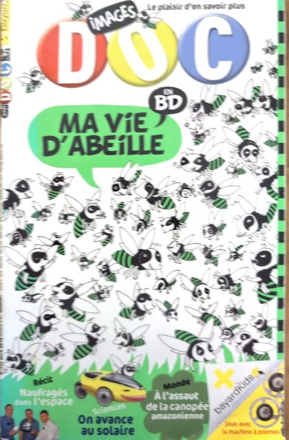
Images Doc
La vie d'une abeille en BD, on avance au solaire, et à l'assaut de la canopée amazonienne.
Je l'emprunte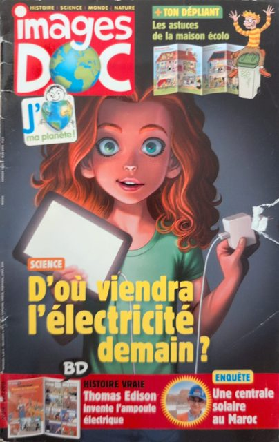
Images Doc
L'énergie de demain, Thomas Edison invente l'ampoule (BD), la centrale solaire au Maroc.
Je l'emprunte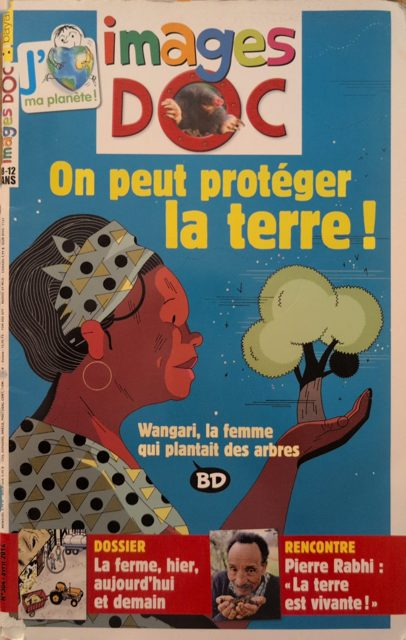
Images Doc
Wangari Maathai, la femme qui plantait des arbres (BD), la ferme d'hier et de demain, rencontre avec Pierre Rabhi.
Je l'emprunte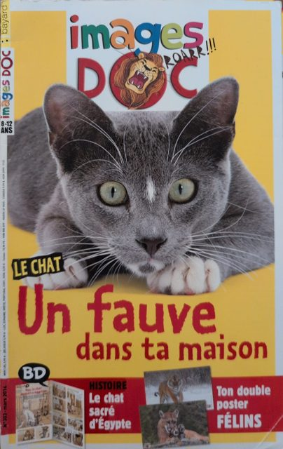
Images Doc · mars 2014
Le chat, le chat sacré d'Égypte (BD) et un double poster sur les félins.
Je l'emprunte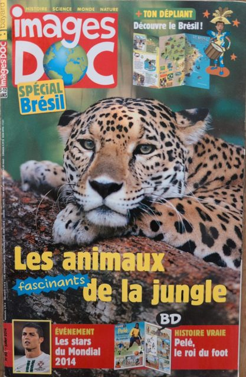
Images Doc · juillet 2014
Spécial Brésil, les stars du Mondial 2014 et Pelé, le roi du foot.
Je l'emprunte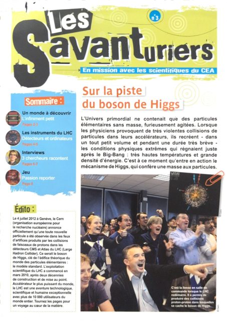
Les Savanturiers · N° 3
Particules, LHC et collisions : un voyage au cœur de la matière avec les chercheurs du CEA.
Je l'emprunte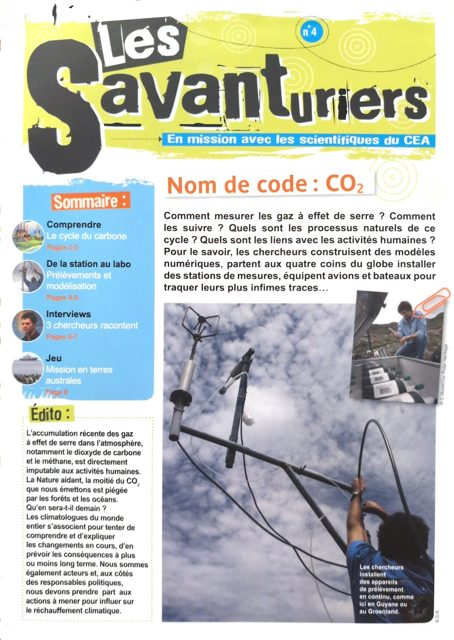
Les Savanturiers · N° 4
Cycle du carbone, gaz à effet de serre et stations de mesure.
Je l'emprunte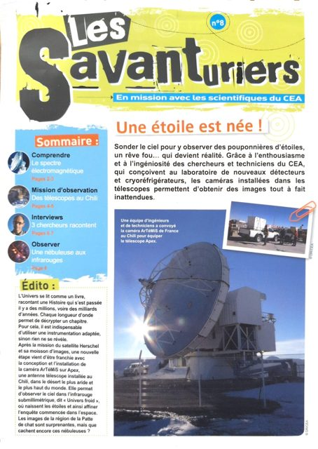
Les Savanturiers · N° 8
Observer le ciel : télescopes au Chili et caméra infrarouge.
Je l'emprunte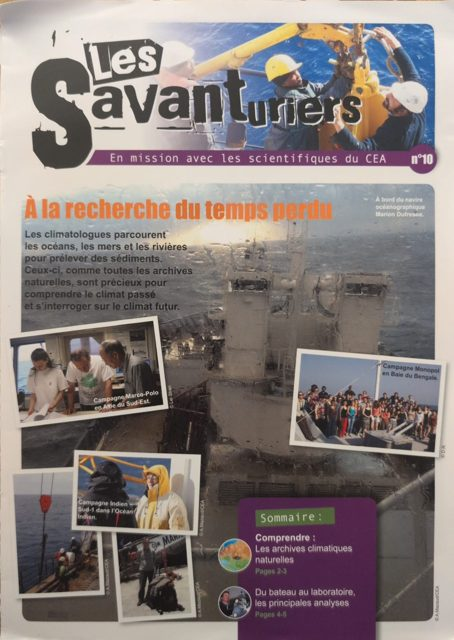
Les Savanturiers · N° 10
Les archives climatiques naturelles, du bateau au laboratoire.
Je l'emprunte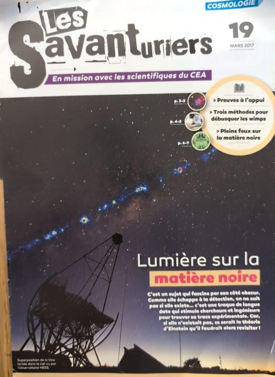
Les Savanturiers · N° 19 · mars 2017
Cosmologie : comment traquer la matière noire.
Je l'emprunte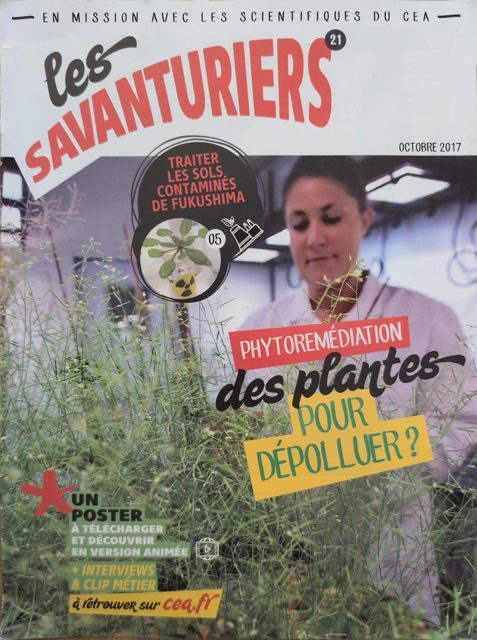
Les Savanturiers · N° 21 · octobre 2017
Traiter les sols contaminés de Fukushima avec des plantes.
Je l'emprunte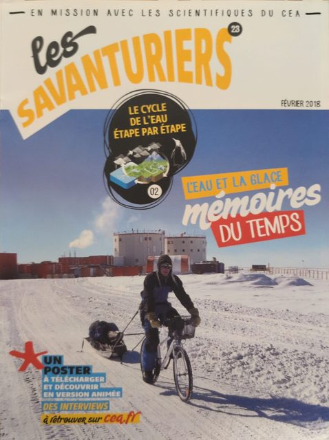
Les Savanturiers · N° 23 · février 2018
Le cycle de l'eau étape par étape, en Antarctique.
Je l'emprunte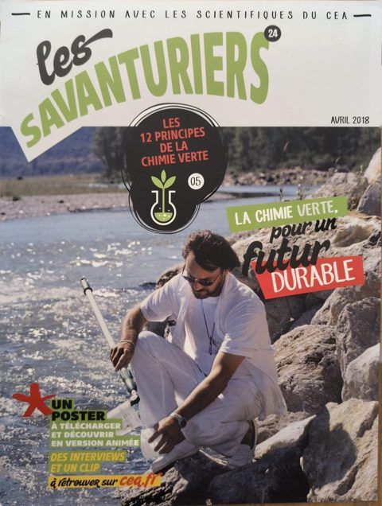
Les Savanturiers · N° 24 · avril 2018
Les 12 principes de la chimie verte.
Je l'emprunte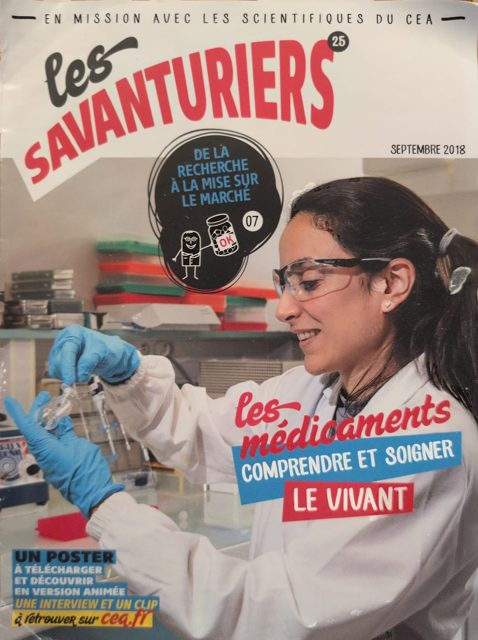
Les Savanturiers · N° 25 · septembre 2018
De la recherche à la mise sur le marché d'un médicament.
Je l'emprunte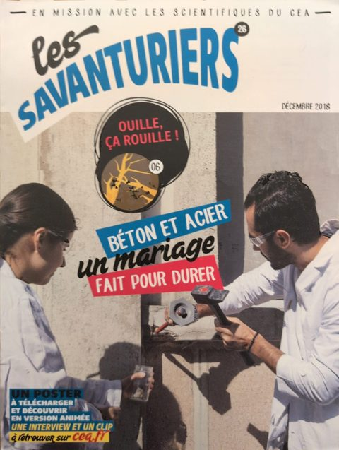
Les Savanturiers · N° 26 · décembre 2018
Ouille, ça rouille ! Comment le béton armé résiste au temps.
Je l'emprunte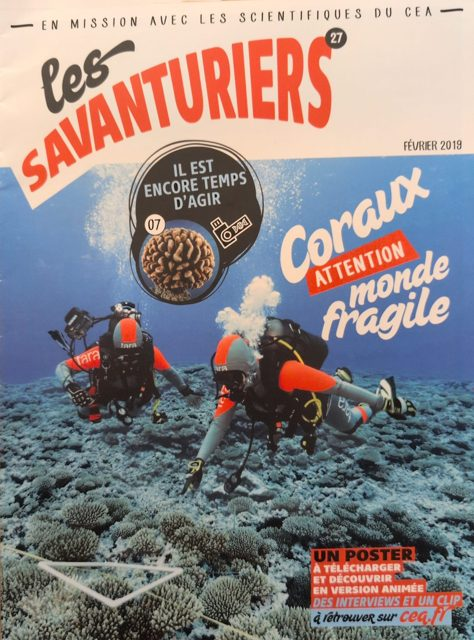
Les Savanturiers · N° 27 · février 2019
Les récifs coralliens, un monde fragile : il est encore temps d'agir.
Je l'emprunte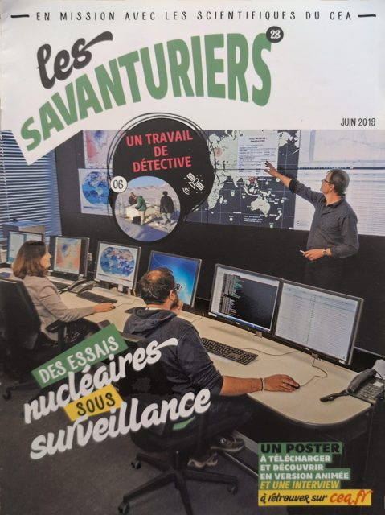
Les Savanturiers · N° 28 · juin 2019
Un travail de détective pour surveiller les essais nucléaires.
Je l'emprunte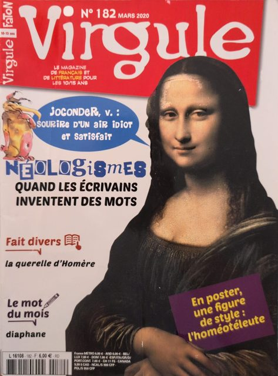
Virgule · N° 182 · mars 2020
Le magazine de français et de littérature des 10-15 ans : néologismes, la querelle d'Homère.
Je l'emprunte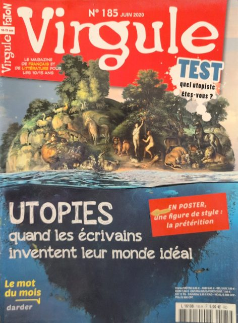
Virgule · N° 185 · juin 2020
Test : quel utopiste êtes-vous ? Poster : la prétérition.
Je l'emprunte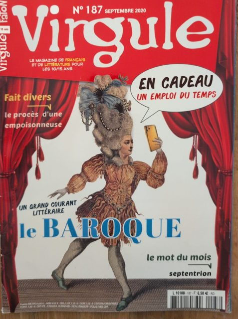
Virgule · N° 187 · septembre 2020
Un grand courant littéraire, le procès d'une empoisonneuse, un emploi du temps en cadeau.
Je l'emprunte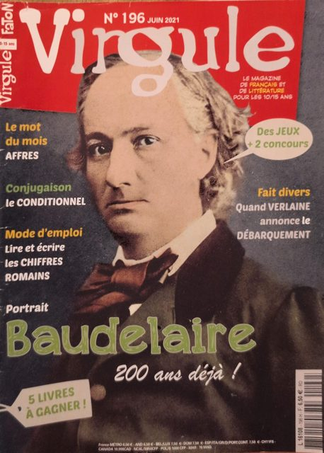
Virgule · N° 196 · juin 2021
Portrait de Baudelaire, le conditionnel, les chiffres romains.
Je l'emprunte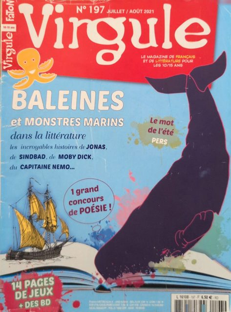
Virgule · N° 197 · juillet/août 2021
Jonas, Sindbad, Moby Dick, Capitaine Nemo… avec 14 pages de jeux et de BD.
Je l'emprunte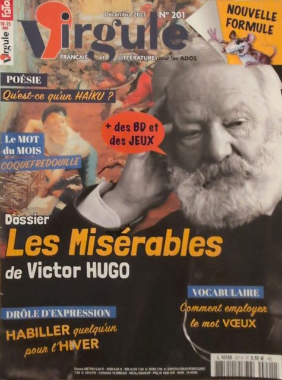
Virgule · N° 201 · décembre 2021
Dossier Les Misérables, poésie : qu'est-ce qu'un haïku ?
Je l'emprunteVirgule · N° 202 · janvier 2022
Dossier Agatha Christie, la métonymie, l'histoire du dictionnaire.
Je l'emprunteVirgule · N° 203 · février 2022
Numéro spécial Molière : sa vie, ses œuvres, extraits à lire.
Je l'emprunteLe Journal des Incollables · N° 15 · mars/avril 2014
Dossier corps humain. Toutes tes questions, toutes nos réponses !
Je l'emprunteYoupi J'ai compris ! · Hors-série (5-8 ans)
Je découvre, j'expérimente, j'apprends : le corps humain pour les petits.
Je l'emprunteL'Éléphant Junior · N° 4 · mars 2021
La culture générale en jeux : la liberté de la presse en BD, nature et monde.
Je l'emprunteCosinus · N° 191 · mars 2017
Le magazine de maths et de sciences : comment apprend-on ?
Je l'emprunteYoupi J'ai compris ! · Hors-série (5-8 ans)
Je découvre, je joue, j'apprends : les animaux pour les petits.
Je l'emprunteLe Journal des Incollables · N° 3
Dossier animaux (dès 8 ans) : océans, couleurs des yeux, Le Chat Potté.
Je l'emprunteLe Journal des Incollables · N° 18 · mai/juin 2014
Dossier nature : la pollution, les léopards et les guépards, l'apiculteur…
Je l'emprunteAucun document ne correspond à ta recherche. Essaie un autre mot !
Un livre te manque ? Dis-le-nous, on essaiera de l'ajouter.